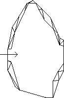

Here you will find Longfang Witherhide from the [Slay Dragon Quest].
You need some decent fire protection but some even better armor. If you do not come close to him he will only
use his long range fire ball which is does not hit very hard. So run into the cave and into a corner and switch into Turn-Based mode,
then if he comes to close, go into Real-Time mode and go into another corner.
After you kill him, search his dead body and take with you the Dragon Claw, which you will need to
complete the quest.
Leave us a message at: mgrounds@hotmail.com
This Page was last updated on .